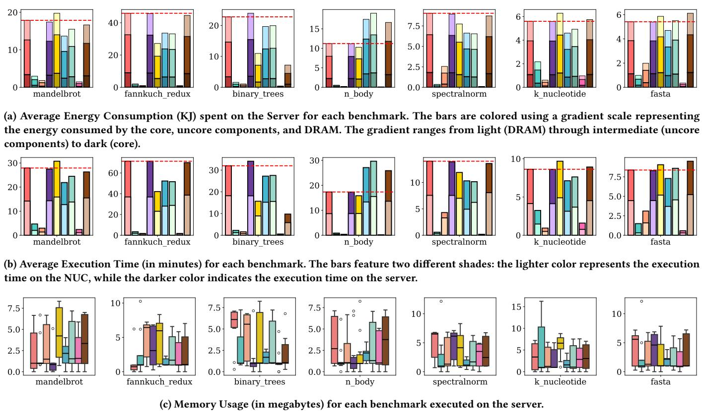
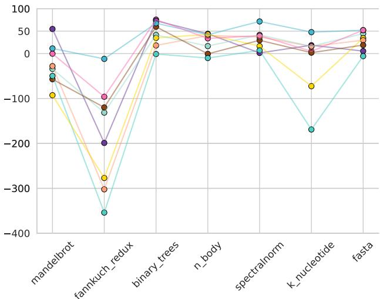
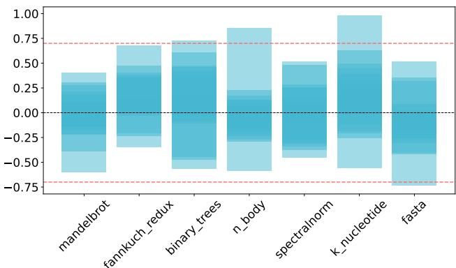

An Empirical Study on the Performance and Energy Usage of Compiled Python Code 图表详解¶
Table 1: Subjects Summary¶

- 该图片为 Table 1: Subjects Summary，总结了本研究中使用的八个 Python 编译器及参考解释器 CPython 的基本信息。
- 表格包含三列：Subject（主体）、Type（类型）、Description（描述）。
- 所有编译器按其编译方式分为 AOT（Ahead-Of-Time）或 JIT（Just-In-Time），CPython 作为解释器单独列出。
| Subject | Type | Description |
|---|---|---|
| Nuitka | AOT | Translates full Python code to optimized C++ |
| Cython | AOT | Converts Python to C/C++ |
| MyPyC | AOT | Compiles Python to C extensions |
| Codon | AOT | Compiles a subset of Python to native machine code |
| PyPy | JIT | Uses a JIT compiler based on a subset of Python (RPython) |
| Numba | JIT | Compiles Python into optimized machine code at runtime |
| Pyston-lite | JIT | Adds lightweight JIT optimizations to the standard CPython interpreter |
| Python 3.13 | JIT | Experimental JIT for CPython, introduced in Python 3.13 |
| CPython | Interpreter | The reference Python implementation |
- Numba 和 PyPy 是典型的 JIT 编译器，分别针对数值计算和通用 Python 代码优化。
- Codon 作为 AOT 编译器，仅支持 Python 子集，但能直接生成原生机器码，性能提升显著。
- Pyston-lite 和 Python 3.13 JIT 均基于 CPython，提供轻量级或实验性 JIT 优化。
- CPython 作为基准，是所有比较的参照对象，不进行任何编译优化。
- 该表清晰区分了不同编译器的技术路径，为后续性能与能耗对比提供了分类基础。
Figure 1: Experiment Execution¶

- 实验执行架构：图示清晰划分了Orchestration Machine (Laptop) 与 Testbeds (SERVER, NUC) 两大核心组件，通过 SSH 连接实现远程控制与数据回传。
- 实验流程自动化：整个实验由 ExperimentRunner 框架驱动，其内部循环逻辑（Loop for each compiler and benchmark）确保了对每个编译器和基准测试组合的标准化、重复性执行。
- 关键执行步骤：
- 预热阶段：在正式运行前，通过执行
warmup.py脚本对测试机进行2分钟预热，以稳定硬件温度，减少环境变量对能耗测量的干扰。 - 并行监控：在执行基准测试的同时，EnergiBridge 和 Perf 工具被启动，分别用于实时采集 CPU/DRAM/Package 能耗 (J)、内存使用量 (KB) 以及 LLC Load Misses (%) 等关键性能指标。
- 数据收集与传输：基准测试完成后，系统会等待其结束，然后通过 SCP 协议将生成的原始数据文件（
energi.csv,output.txt,perf.csv）从测试床安全复制回协调机，并解析存入run_table.csv。 - 冷却阶段：每次运行结束后，系统会强制暂停2分钟，以便让测试机充分散热，为下一次独立运行提供一个稳定的起始状态。
- 预热阶段：在正式运行前，通过执行
- 测量工具分工明确：
- EnergiBridge：负责能耗与内存占用的量化，其输出包含三个维度：Energy Usage CPU (J), Energy Usage DRAM (J), Energy Usage Package (J)。
- Perf：专注于底层硬件性能分析，主要输出 LLC Load Misses (%)，用以评估缓存效率。
- 数据流路径：数据从测试床上的测量工具产生，经由 SSH 或 SCP 通道回传至协调机，最终汇聚到统一的数据表中，为后续的统计分析提供结构化输入。
| 测量工具 | 主要功能 | 输出数据项 |
|---|---|---|
| EnergiBridge | 能耗与内存监控 | Energy Usage CPU (J), Energy Usage DRAM (J), Energy Usage Package (J), Process Memory (KB) |
| Perf | 缓存性能分析 | LLC Load Misses (%) |
| time (Python module) | 执行时间记录 | Execution Time (min) |
Table 2: Descriptive Statistics from Server data. The highlighted number shows the minimum average value.¶

- Table 2 汇总了在服务器上运行七个基准测试时，九种 Python 执行环境（包括 CPython 和八种编译器）的描述性统计结果，涵盖四个关键性能指标：能量消耗、执行时间、内存使用和 LLC 加载未命中率。
- 数据以平均值（mean）、标准差（std）、最小值（min）、中位数（50%）和最大值（max）呈现，便于横向比较各编译器的稳定性与极端表现。
- Codon 在 能量消耗（0.64 KJ）和 执行时间（1.04 分钟）两项指标上均取得最低平均值，表明其在能效和速度方面表现最优。
- Nuitka 在 内存使用（1.75 MB）上取得最低平均值，显示其在内存优化方面具有显著优势。
- PyPy 在 LLC Load Misses (%) 上取得最低平均值（13.25%），说明其缓存效率较高。
- 以下为关键数据表格化整理：
| Subject | Energy Consumption (KJ) mean | Execution Time (min) mean | Memory Usage (MB) mean | LLC Load Misses (%) mean |
|---|---|---|---|---|
| CPython | 16.41 | 24.98 | 3.56 | 21.73 |
| PyPy | 1.54 | 2.36 | 5.18 | 13.25 |
| Numba | 1.33 | 2.15 | 3.29 | 18.22 |
| Pyston-lite | 16.87 | 25.85 | 2.78 | 20.68 |
| Python 3.13 JIT | 12.57 | 19.41 | 3.88 | 18.13 |
| Nuitka | 14.32 | 21.88 | 1.75 | 58.73 |
| Cython | 14.93 | 22.80 | 2.84 | 20.38 |
| Codon | 0.64 | 1.04 | 2.35 | 20.89 |
| Mypyc | 15.09 | 22.73 | 3.15 | 20.06 |
- 高变异度现象在多个指标中普遍存在，例如 CPython 的能量消耗标准差高达 12.97 KJ，表明不同基准测试间能耗差异巨大。
- Numba 和 Codon 在能量与时间上表现突出，但 Nuitka 虽内存占用最低，却伴随极高的 LLC 未命中率（58.73%），暗示其可能牺牲缓存效率换取内存节省。
- Pyston-lite 和 CPython 在能量与时间上表现接近，甚至略差，说明其作为轻量级 JIT 编译器在本实验设置下未体现明显优势。
- Python 3.13 JIT 作为实验性编译器，在多项指标中表现中等，未达到 PyPy 或 Numba 的优化水平，但仍优于原始 CPython。
Figure 2: Average energy usage, execution time, and memory usage for each benchmark by compiler. The dashed red line represents the threshold of the CPython implementation for a given benchmark. Legend: CPython, PyPy, Numba, Pyston-lite, Python 3.13 JIT, Nuitka, Cython, Codon, MyPyc¶

-
图片 5f6b38345651261940062f75000d782ea9de6bbbb22ffe3fd1704a13b3c1994d.jpg 是 Figure 2，展示七个基准测试（benchmark）在不同编译器下的平均能耗、执行时间和内存使用情况，对比对象为 CPython。
-
图中包含三个子图：(a) 平均能耗（KJ），(b) 平均执行时间（分钟），(c) 内存使用（MB），每个子图按 benchmark 分列，共七组。
-
所有柱状图均以 CPython 的结果作为红色虚线阈值，用于直观比较各编译器的优化效果。
-
编译器图例包括：CPython, PyPy, Numba, Pyston-lite, Python 3.13 JIT, Nuitka, Cython, Codon, MyPyc。
-
能耗柱状图采用三色渐变堆叠，从浅到深分别代表 DRAM → uncore components → core 的能耗贡献。
-
Codon、PyPy、Numba 在多数 benchmark 中显著低于 CPython 阈值，尤其在 n_body 和 k_nucleotide 上表现突出。
-
Nuitka、Cython、MyPyc 在 n_body 上能耗高于 CPython，呈现负优化。
-
能耗主要由 uncore components（如 LLC、内存控制器）主导，其次是 core，DRAM 占比最小。
-
柱状图采用双色调：浅色代表 NUC 平台，深色代表 Server 平台。
-
Codon、PyPy、Numba 在所有 benchmark 上均大幅缩短执行时间，尤其 Codon 在 n_body 上提速近 90 倍。
-
Python 3.13 JIT 在 fasta 和 k_nucleotide 上反而慢于 CPython，显示其优化不稳定。
-
NUC 与 Server 平台趋势一致，但绝对时间值不同，反映硬件差异。
-
使用箱线图展示内存使用（RSS，单位 MB），带误差条和离群点。
-
Nuitka 在几乎所有 benchmark 中内存使用最低，且波动小，稳定性高。
-
PyPy 在 fannkuch_redux 和 k_nucleotide 上内存占用显著高于 CPython，存在峰值达 11 MB。
-
其他编译器内存表现与 CPython 相近，无明显优势或劣势。
| Benchmark | 最佳能耗编译器 | 最佳执行时间编译器 | 最低内存编译器 |
|---|---|---|---|
| mandelbrot | Codon | Codon | Nuitka |
| fannkuch_redux | Codon | Codon | Nuitka |
| binary_trees | Codon | Codon | Nuitka |
| n_body | Codon | Codon | Nuitka |
| spectralnorm | PyPy | PyPy | Nuitka |
| k_nucleotide | Codon | Codon | Nuitka |
| fasta | Codon | Codon | Nuitka |
- 总体趋势：Codon、PyPy、Numba 在性能和能耗上表现最优；Nuitka 在内存优化上最稳定；其他编译器效果有限或不稳定。
- 平台一致性：NUC 与 Server 在能耗和执行时间趋势高度一致，验证实验可重复性。
- 异常点：n_body 编译后部分 AOT 编译器（Nuitka/Cython/MyPyc）能耗反增，可能因 Python 列表操作与 C/C++ 类型转换开销所致。
Figure 3: Speedup and Energy improvement on the server across benchmarks compared to CPython. Legend: PyPy, Numba, Pyston-lite, Python 3.13 JIT, Nuitka, Cython, Codon, MyPyc¶

- 图片包含两个子图，分别展示在服务器上不同编译器相对于 CPython 的 Speedup 和 Energy Improvement (%)，横轴为七个基准测试（benchmarks），纵轴为性能提升百分比或倍数。
- 子图 (a) Speedup 显示了各编译器在不同基准测试中的执行速度加速比。Codon 在多个基准中表现突出，尤其在
n_body上达到约 89 倍加速，在spectralnorm上也接近 20 倍。PyPy 和 Numba 在多数基准上稳定提供 5–40 倍加速，其中 Numba 在n_body达到约 44 倍。 - 子图 (b) Energy Improvement (%) 展示了能量效率提升百分比。Codon 在
n_body上实现高达 99.06% 的节能，整体平均节能达 94.66%。PyPy 和 Numba 分别平均节能 86.89% 和 86.61%，表现稳定。 - 部分编译器在特定基准上出现负优化，如 Nuitka、Cython、MyPyc 在
n_body上能耗反而增加，分别达 -54.98%、-68.65%、-47.96%，表明其 AOT 编译机制对数学密集型列表操作适配不佳。 - 下表总结关键编译器在代表性基准上的表现：
| 编译器 | n_body (Speedup) | n_body (Energy Improvement %) | spectralnorm (Speedup) | k_nucleotide (Energy Improvement %) |
|---|---|---|---|---|
| Codon | ~89x | 99.06% | ~20x | ~60% |
| PyPy | ~20x | ~80% | ~23x | ~62% |
| Numba | ~44x | ~85% | ~15x | ~70% |
| Nuitka | ~1x | -54.98% | ~1x | ~20% |
| Cython | ~1x | -68.65% | ~1x | ~30% |
- 整体趋势显示，Codon、PyPy、Numba 是最有效的性能与能效优化工具，而 Nuitka、Cython、MyPyc 在部分场景下可能引入额外开销，需谨慎选择适用场景。
- 图例中颜色对应编译器：粉色=PyPy，橙色=Numba，紫色=Pyston-lite，浅蓝=Python 3.13 JIT，深绿=Nuitka，青色=Cython，棕色=Codon，黄色=MyPyc。
Figure 4: Memory usage improvement on the server across benchmarks compared to CPython. Legend: PyPy, Numba, Pyston-lite, Python 3.13 JIT, Nuitka, Cython, Codon, MyPyc¶

- 图表标题为“Figure 4: Memory usage improvement on the server across benchmarks compared to CPython”，展示的是在服务器平台上，各编译器相对于 CPython 在内存使用上的改进百分比。
- 横轴为七个基准测试（benchmarks）：
mandelbrot,fannkuch_redux,binary_trees,n_body,spectralnorm,k_nucleotide,fasta。 - 纵轴为内存使用改进百分比，正值表示内存使用减少（优化），负值表示内存使用增加（恶化）。
- 图例包含八个编译器：PyPy, Numba, Pyston-lite, Python 3.13 JIT, Nuitka, Cython, Codon, MyPyc，每种编译器用不同颜色和标记点表示。
- Nuitka 在多数基准测试中表现最佳，尤其在
fannkuch_redux和binary_trees上达到约 -300% 至 -400% 的改进（即内存使用大幅下降），表明其在内存优化方面非常有效。 - Codon 在多个测试中也表现出色，如
n_body和spectralnorm，改进幅度在 -50% 至 -100% 之间。 - PyPy 在部分测试中（如
fannkuch_redux）出现显著负向改进（内存使用激增），但在其他测试中表现稳定。 - Numba 和 Cython 表现较为波动，在某些测试中优化明显（如
n_body），在另一些测试中则导致内存使用上升。 - Python 3.13 JIT 和 Pyston-lite 整体表现平庸，改进幅度较小或为负值。
- MyPyc 在多数测试中表现不佳，甚至在
fannkuch_redux中出现超过 -300% 的恶化。 - 总体趋势显示，内存优化效果高度依赖于具体基准测试和编译器组合，无单一编译器在所有场景下均最优。
| 编译器 | 最佳表现基准 | 改进幅度（%） | 最差表现基准 | 恶化幅度（%） |
|---|---|---|---|---|
| Nuitka | fannkuch_redux | ~ -400 | fasta | ~ +50 |
| Codon | n_body | ~ -100 | k_nucleotide | ~ +20 |
| PyPy | binary_trees | ~ -50 | fannkuch_redux | ~ -300 |
| Numba | n_body | ~ -80 | mandelbrot | ~ +20 |
| Cython | spectralnorm | ~ -60 | fannkuch_redux | ~ -200 |
| Python 3.13 JIT | binary_trees | ~ -30 | fasta | ~ +40 |
| Pyston-lite | n_body | ~ -20 | fannkuch_redux | ~ -100 |
| MyPyc | binary_trees | ~ -40 | fannkuch_redux | ~ -300 |
- 关键结论：Nuitka 是内存优化最稳定的编译器，尤其适合内存敏感型应用；Codon 在计算密集型任务中表现优异；而 PyPy 和 MyPyc 在特定场景下可能导致内存使用激增，需谨慎选择。
6.4 Considerations on LCC miss percentage Figure 5: Correlation between execution time and Last-Level Cache misses. Darker areas show higher frequency, with the red dashed line indicating a strong correlation.¶

- 图片 8fac7d839736eba7a85e33736b6ce6cbc1eb1fdfe646a1ac44f9d94613c047e2.jpg 展示的是 Figure 5，标题为“Correlation between execution time and Last-Level Cache misses”，用于分析执行时间与 LLC miss rate 之间的相关性。
- 图中横轴列出七个基准测试（benchmarks）：mandelbrot, fannkuch_redux, binary_trees, n_body, spectralnorm, k_nucleotide, fasta。
- 纵轴表示 Pearson’s correlation coefficient 值，范围从 -0.75 到 1.00，反映执行时间与 LLC miss rate 的线性相关强度和方向。
- 图中使用颜色深浅表示数据点的频率分布，颜色越深代表该相关系数值出现的频率越高。
- 图中包含两条水平虚线：一条红色虚线位于 y=0.75，标注为“strong correlation”；另一条黑色虚线位于 y=0.00，作为零相关参考线。
- 从图中可见，大部分数据点集中在 正相关区域（y > 0），表明在多数情况下，LLC miss rate 越高，执行时间也倾向于更长。
- 在 k_nucleotide 和 n_body 基准上，相关系数普遍较高，部分接近或超过 0.75，显示强正相关。
- 在 fasta 和 mandelbrot 上，相关系数分布较广，部分值低于 0，甚至接近 -0.5，说明存在负相关或弱相关情况。
- 尽管整体趋势偏向正相关，但图中仍存在大量分散点，尤其在中低相关区间（如 0.25–0.5），表明相关性并不稳定。
- 作者在正文 6.4 节指出，LLC miss rate 与执行时间之间存在正相关趋势，但相关性不强且不稳定，并强调“correlation does not mean causation”，建议未来深入研究其因果机制。
- 此图支持了作者关于 uncore components（如 LLC）消耗大量能量并影响性能 的推断，但无法单独确认编译器对 LLC miss rate 的优化效果。